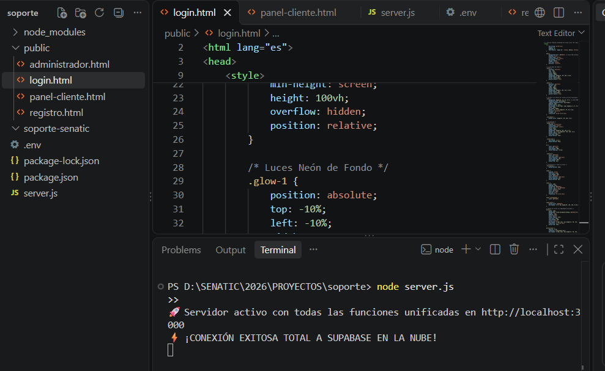
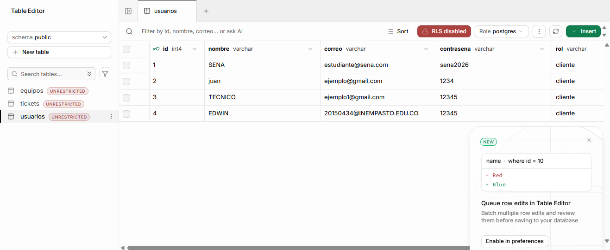
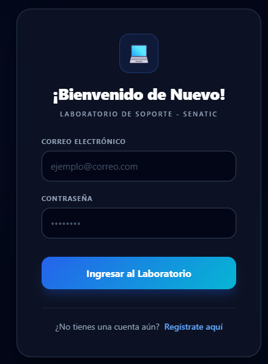
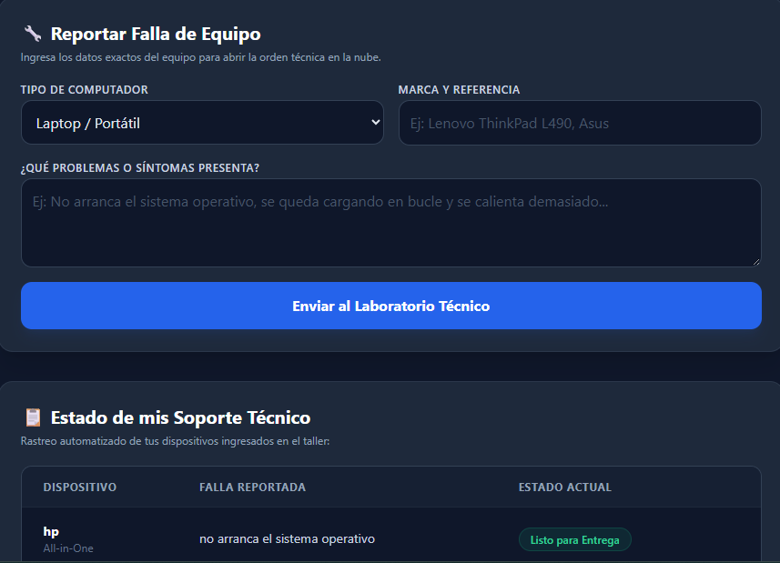
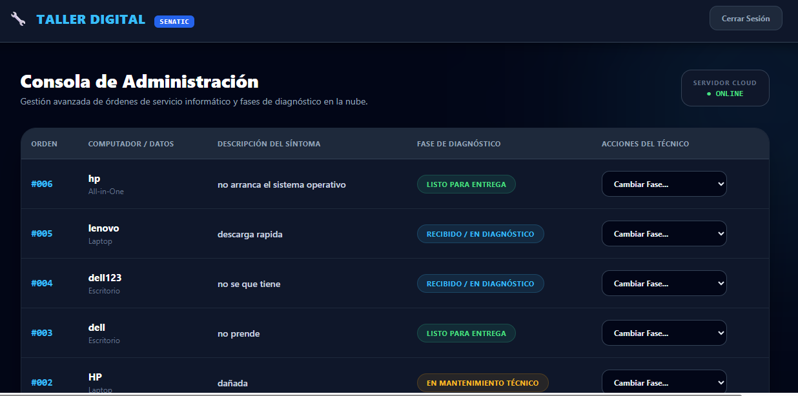

Contexto Institucional y Origen del Proyecto
Diagnóstico inicial de la infraestructura tecnológica de la IEM INEM Pasto y justificación formativa en la estrategia SENATIC.
school 1.1 La Realidad Tecnológica en el Colegio INEM
El Instituto de Educación Municipal INEM Pasto es una de las instituciones educativas más grandes del departamento de Nariño, albergando múltiples sedes, dos jornadas académicas y cientos de computadores distribuidos entre salas de sistemas, laboratorios de física, coordinación y áreas administrativas.
En una estructura de esta escala, la tasa de mantenimiento de hardware es continua: fallas de memoria RAM, fallos en fuentes de poder, pantallas desconfiguradas o infecciones por software malicioso ocurren a diario. Sin un software dedicado, el control se vuelve inmanejable.
Carencia de un canal digital que conecte a los profesores que detectan una avería con los estudiantes y técnicos capacitados para resolverla.
Aplicar las habilidades de programación full-stack adquiridas en la media técnica para diseñar una solución real que sirva al propio colegio.
De la Planilla en Papel al Caos Técnico
Evaluación de las 4 fallas estructurales del registro físico frente a las ventajas del modelo digital automatizado.
warning 2.1 Las Cuatro Deficiencias del Método Tradicional
- cancel Pérdida y desorden físico: Los registros anotados en cuadernos o planillas de papel se deterioran, se manchan o se traspapelan fácilmente en el taller.
- cancel Falta de trazabilidad para docentes: El profesor no sabe si el equipo ya fue recibido, si está en revisión o qué técnico está a cargo, obligándolo a desplazarse.
- cancel Ausencia de historial de mantenimiento: No queda constancia de qué componentes se cambiaron ni cuánto costó la intervención con anterioridad.
- cancel Brechas de privacidad: Cualquier persona con acceso al cuaderno físico podía observar los reportes y nombres de los demás salones y áreas.
| Aspecto | Método Tradicional en Papel | Taller Digital Automatizado |
|---|---|---|
| Registro de fallas | Planilla manuscrita propensa a pérdida | Folio único digital (#006, #005) |
| Seguimiento | Presencial, preguntando en persona | Rastreo en tiempo real vía web 24/7 |
| Almacenamiento | Cuadernos físicos perecederos | PostgreSQL persistente en la nube |
| Privacidad | Cero privacidad (abierto a cualquiera) | Filtro por usuario (Row Level Security) |
Solución: Las Dos Caras del Taller Digital
Cómo el sistema segmenta la experiencia entre el usuario solicitante y el administrador técnico para garantizar orden y fluidez.
La plataforma fue concebida con una arquitectura de roles que resuelve las necesidades de ambos extremos de la cadena de soporte:
1. Cara del Usuario Común
- check Formulario simplificado: Especifica el tipo de PC (Laptop, Escritorio), marca, salón y síntomas observados.
- check Rastreador pasivo: Visualiza el estado actual de su máquina reportada sin necesidad de llamadas ni trámites.
2. Cara de la Consola Técnica
- check Inventario global: Vista consolidada de todos los computadores ingresados desde cualquier salón del colegio.
- check Actualización a 1 clic: Modifica la fase (Diagnóstico, Mantenimiento, Listo) y registra notas técnicas al instante.
Arquitectura Tecnológica en Tres Capas
Diseñado en Visual Studio Code bajo principios de bajo consumo de ancho de banda y desacoplamiento de componentes.

Construida con HTML5 semántico y CSS moderno incrustado. Garantiza que la interfaz cargue de inmediato incluso en equipos antiguos de las salas de sistemas.
Servidor asíncrono en Node.js con el framework Express. Expone rutas REST seguras para validar credenciales y procesar las peticiones de servicio técnico.
Instancia de PostgreSQL alojada en Supabase. Garantiza persistencia en la nube: aunque se apague el computador local, los datos siguen a salvo.
Modelo Entidad-Relación en Supabase
Estructura de tablas normalizadas en PostgreSQL que garantizan integridad referencial y aislamiento por roles.

5.1 Las Tres Tablas Fundamentales
Desglose de Pantallas del Prototipo
Recorrido gráfico y funcional por las pantallas desarrolladas en el proyecto oficial.
6.1 Pantalla de Acceso (Login)
localhost:3000/login.html
Diseñada con una estética oscura y tecnológica que reduce la fatiga visual. Valida credenciales contra Supabase Auth antes de otorgar acceso al panel de control personal.
6.2 Módulo de Reporte y Seguimiento del Usuario
Panel del Docente
Presenta un formulario rápido para reportar síntomas (ej. "El equipo pita 3 veces y no da video") y, en la misma vista, la tabla "Estado de mis Soporte Técnico" donde el profesor consulta el avance exacto de su máquina.
6.3 Consola de Administración Técnica (Taller Digital)
Panel del Técnico
Herramienta de banco de trabajo que lista las órdenes (#006, #005). Los técnicos despliegan el menú de fases (En Diagnóstico, En Mantenimiento, Listo para Entrega) y fijan observaciones técnicas sin necesidad de alterar código.
Impacto y Proyección Institucional
Beneficios directos para la administración del colegio y visión de escalabilidad a largo plazo.
7.1 Visión de Futuro en el INEM Pasto
Aunque el prototipo actual funciona perfectamente en el laboratorio piloto de sistemas, está diseñado para ser totalmente escalable. La meta a mediano plazo es asignar usuarios a cada una de las sedes satélite del INEM, a las secretarías académicas y a las directivas, unificando todo el mantenimiento de cómputo del colegio en una sola base de datos centralizada.
Estructura del Pitch para Jurados
Guión estructurado y recomendaciones oratorias para la sustentación ante el comité evaluador de SENATIC y los profesores de sistemas.
"Buenos días, respetados jurados y profesores. Somos estudiantes de grado 11 del Colegio INEM y hoy presentamos nuestro proyecto productivo para la estrategia SENATIC: Plataforma Web Inteligente de Soporte Técnico y Taller Digital..."
"En un colegio tan grande como el nuestro hay cientos de computadores. Cuando uno se daña, todo se maneja en planillas de papel: el papel se moja, se pierde, la información se embolata y nadie sabe si el equipo ya se arregló o sigue roto..."
"Nuestra plataforma tiene dos caras: la del usuario para que cualquier profesor reporte la falla y rastree su folio sin salir de su aula; y la consola técnica donde nosotros como administradores cambiamos estados en un clic y registramos notas técnicas..."
"Construido con Node.js, Express y PostgreSQL en Supabase. Aunque apaguemos el PC del taller, los registros siguen intactos en la nube. Demostramos cómo lo aprendido en SENATIC puede transformar y modernizar nuestra institución educativa. Muchas gracias."
Preguntas Frecuentes del Jurado
Respuestas técnicas a las preguntas y cuestionamientos más comunes de los evaluadores de software.